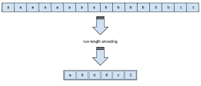

Compressie
Afbeelding, geluidsbestanden en video's bestaan uit veel detail, dit zijn dan ook grote bestanden die veel tijd kosten om te downloaden en nog eens veel data kosten om te downloaden. De oplossing hiervoor is datacompressie. Datacompressie maakt deze bestanden kleiner, waardoor de bestanden minder data kosten om te downloaden en minder opslag inneemt.
